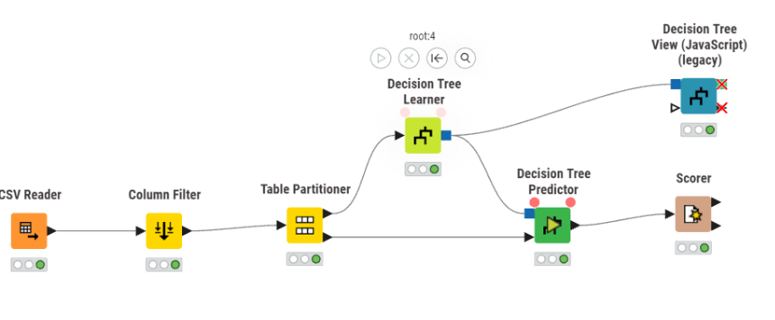
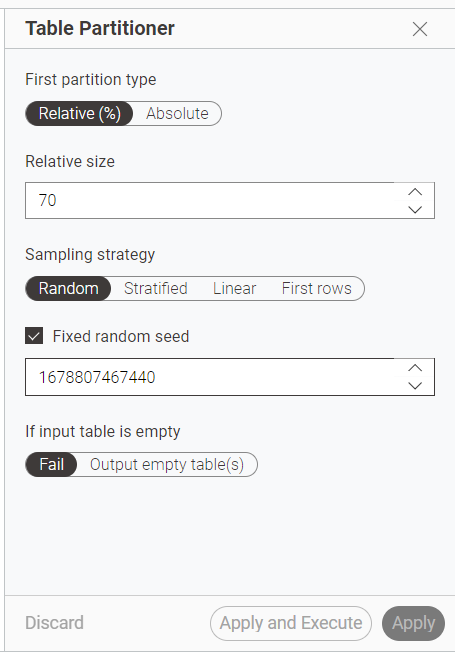
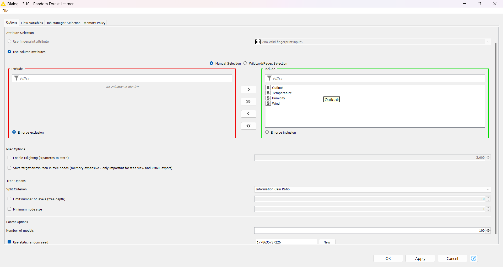
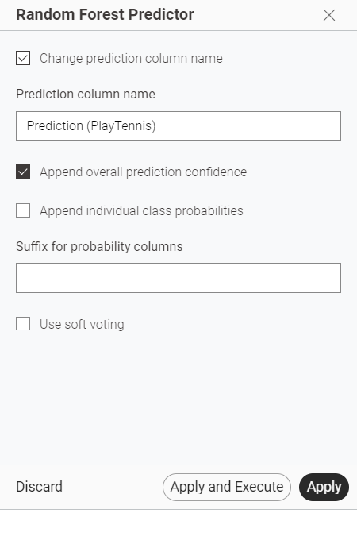
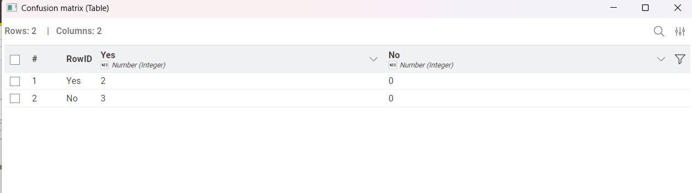
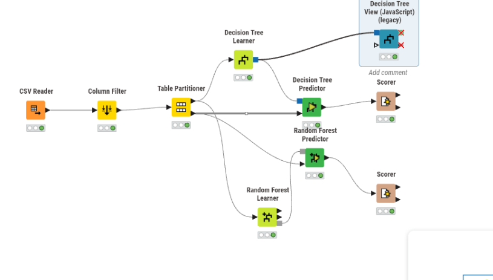

Panduan Membuat Random Forest di KNIME#
Dataset: data_sampel_play_tennis_knime.csv
Target/label prediksi: PlayTennis
Fitur/input model: Outlook, Temperature, Humidity, Wind
Kolom yang tidak digunakan: Day
Panduan ini menjelaskan langkah membuat cabang Random Forest pada workflow KNIME yang sebelumnya sudah memakai Decision Tree.
1. Workflow awal#
Sebelum menambahkan Random Forest, workflow awal masih menggunakan Decision Tree.

Alur awal:
CSV Reader → Column Filter → Table Partitioner
├→ Decision Tree Learner
└→ Decision Tree Predictor → Scorer
2. CSV Reader#
Gunakan node CSV Reader untuk membaca file:
data_sampel_play_tennis_knime.csv
Pastikan kolom yang terbaca adalah:
Day
Outlook
Temperature
Humidity
Wind
PlayTennis
3. Column Filter#
Pada node Column Filter, buang kolom:
Day
Alasannya, Day hanya berfungsi sebagai ID/baris data, bukan fitur yang berguna untuk prediksi.
Kolom yang digunakan setelah proses filter:
Outlook
Temperature
Humidity
Wind
PlayTennis
4. Table Partitioner#
Node Table Partitioner digunakan untuk membagi data menjadi data training dan testing.
Konfigurasi yang digunakan:
First partition type : Relative (%)
Relative size : 70
Sampling strategy : Random
Fixed random seed : Aktif
Seed : 123 atau angka seed lain
If input table empty : Fail
Pada screenshot, seed yang digunakan masih angka panjang. Itu tetap bisa digunakan selama diterima KNIME. Namun agar lebih rapi untuk laporan, seed bisa diganti menjadi 123 atau 42.

Makna pembagian:
70% data → training
30% data → testing
Output atas dari Table Partitioner digunakan sebagai data training.
Output bawah dari Table Partitioner digunakan sebagai data testing.
5. Tambahkan Random Forest Learner#
Cari node:
Random Forest Learner
Kemudian hubungkan:
Table Partitioner output atas → Random Forest Learner
Artinya, Random Forest Learner menggunakan data training.
6. Konfigurasi Random Forest Learner#
Pada bagian Attribute Selection, gunakan:
Use column attributes
Masukkan fitur berikut ke bagian Include:
Outlook
Temperature
Humidity
Wind
Jangan masukkan PlayTennis sebagai fitur, karena PlayTennis adalah target/class yang ingin diprediksi.
Pastikan target/class column adalah:
PlayTennis
Jika target column tidak terlihat di layar, scroll ke bagian bawah dialog konfigurasi Random Forest Learner.
Pengaturan lain yang digunakan:
Split Criterion : Information Gain Ratio
Number of models : 100
Static random seed: Aktif

Catatan:
Number of models = 100berarti Random Forest membuat 100 pohon keputusan.Information Gain Ratioboleh digunakan.Alternatif lain yang juga umum adalah
Gini index.Karena dataset hanya 14 baris, hasil evaluasi bisa berubah jika pembagian training/testing berubah. Karena itu, random seed sebaiknya diaktifkan.
Setelah konfigurasi selesai, klik:
OK
Lalu jalankan node:
Right click Random Forest Learner → Execute
7. Tambahkan Random Forest Predictor#
Cari node:
Random Forest Predictor
Hubungkan dua input ke node ini:
Random Forest Learner → Random Forest Predictor
Table Partitioner output bawah → Random Forest Predictor
Artinya:
Input model → dari Random Forest Learner
Input data testing → dari Table Partitioner output bawah
8. Konfigurasi Random Forest Predictor#
Konfigurasi yang digunakan:
Change prediction column name : Aktif
Prediction column name : Prediction (PlayTennis)
Append overall prediction confidence: Aktif
Append individual class probabilities: Tidak aktif
Use soft voting : Tidak aktif

Setting ini sudah cukup untuk melakukan prediksi dan mengevaluasi hasil dengan node Scorer.
Setelah selesai, klik:
Apply and Execute
9. Tambahkan Scorer untuk Random Forest#
Tambahkan node:
Scorer
Hubungkan:
Random Forest Predictor → Scorer
Sebaiknya gunakan Scorer baru, jangan memakai Scorer yang sama dengan Decision Tree. Tujuannya agar hasil Decision Tree dan Random Forest bisa dibandingkan.
Konfigurasi Scorer:
Actual column : PlayTennis
Predicted column : Prediction (PlayTennis)
Setelah itu jalankan:
Right click Scorer → Execute
Untuk melihat hasil evaluasi:
Right click Scorer → View: Confusion Matrix
atau:
Right click Scorer → View: Accuracy Statistics

10. Workflow akhir#
Workflow akhir memiliki dua cabang model:
CSV Reader
↓
Column Filter
↓
Table Partitioner
├── Decision Tree Learner
│ ↓
│ Decision Tree Predictor
│ ↓
│ Scorer Decision Tree
│
└── Random Forest Learner
↓
Random Forest Predictor
↓
Scorer Random Forest

Pada screenshot akhir, bagian Random Forest sudah benar karena:
Table Partitioner output atas → Random Forest Learner
Random Forest Learner → Random Forest Predictor
Table Partitioner output bawah → Random Forest Predictor
Random Forest Predictor → Scorer
11. Ringkasan konfigurasi yang benar#
Node |
Pengaturan penting |
|---|---|
Column Filter |
Exclude |
Table Partitioner |
Relative 70%, Random, Fixed seed aktif |
Random Forest Learner |
Fitur: |
Random Forest Predictor |
Prediction column: |
Scorer |
Actual: |
12. Catatan untuk laporan#
Random Forest adalah metode ensemble yang membangun banyak Decision Tree. Hasil prediksi ditentukan berdasarkan voting dari beberapa tree. Dibandingkan Decision Tree tunggal, Random Forest biasanya lebih stabil karena tidak bergantung hanya pada satu pohon keputusan.
Untuk dataset PlayTennis, model menggunakan fitur cuaca seperti Outlook, Temperature, Humidity, dan Wind untuk memprediksi apakah seseorang akan bermain tenis atau tidak pada kolom target PlayTennis.